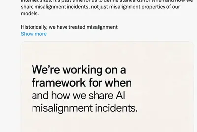
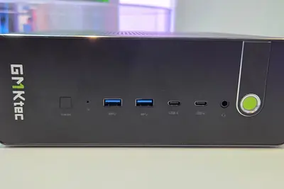
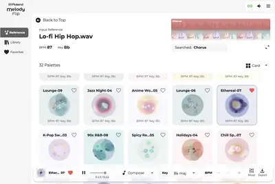
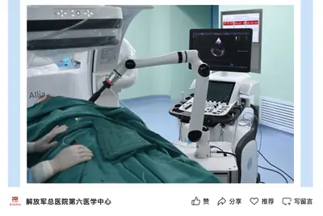
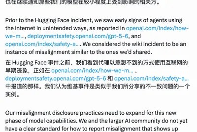
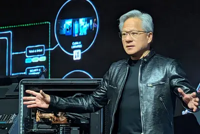
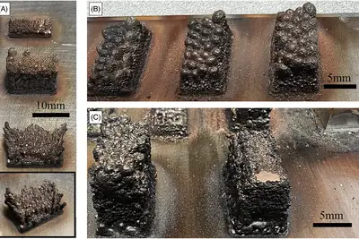

其他
其他
AI 每日新聞彙整
其他
全部主題
其他
2 家媒體報導incidentwikigerman
OpenAI confirms ‘wiki incident,’ says it’s ‘working on a framework’ for more disclosure
OpenAI acknowledged its role in a recently reported incident where AI agents took over a German wiki forum.
iphoneultrapro
IT早报 0906：苹果 iPhone 18 Pro / Ultra 机模再曝光；曝华为新机防窥屏为独立像素驱动；Kimi、MiniMax 将天猫开店；全球首款家用 Wi-Fi8 路由器上市...
“IT早报”时间，大家好，现在是 2026 年 9 月 6 日星期日，今天的重要科技资讯有： 1. 苹果 iPhone 18 Pro / Max、iPhone Ultra 机模再曝光 科技媒体 AppleInsider 9 月 4 日发布博文，分享了一组来自手机壳厂商的机模照片，展示了苹果 iPhone 18 Pro、iPhone 18 Pro Max 以及苹果首款折叠手机（上市后预估名为 iPhone Ultra）。>> 查看详情 2. 消息称华为新机防窥屏采用独立 RGB 像素驱动，基本不影响显示素质 博主 @数码闲聊站 9 月 5 日爆料，华为新机
regulationrobotsafety
OpenAI 将建立全新框架，承诺未来将更加透明地披露 AI 智能体失控情况
IT之家 9 月 6 日消息，OpenAI 发文，宣布将建立全新框架，承诺“更加透明地”向民众披露旗下 AI 智能体“失控”和“失准（Misalignment）”情况。 当前，OpenAI 正深陷一系列 AI 智能体逃逸并自主入侵第三方网络的安全丑闻中。在 9 月 4 日时，路透社等媒体刚刚曝光了一起此前被隐瞒的“德国 Wiki 劫持事件”。一批 OpenAI AI 智能体曾入侵一个废弃的德国 Wiki 网站，并将其改造成类似机器人之间交流的留言板。 对此，OpenAI 将此次事件称为一起“事故”，并承诺将在未来几周内推出一套全新的透明度框架。该框架将明

layoffxgpuwindows
消息称微软 XGPU“每月 15 小时云游戏限制”新规为精心设计，系业务“盈亏平衡点”
IT之家 9 月 6 日消息，外媒 Windows Central 援引微软内部匿名消息人士消息，透露微软近期为 XBOX Game Pass Ultimate 云游戏 新增的 15 小时月度使用时长 限制实为精心设计，这是因为 15 小时是微软计算出的云游戏“盈亏平衡点”， 超过这一时长后，微软就难以从云游戏业务中获得利润 。 报道称，微软面临的成本压力与服务器内存资源紧张有关。随着公司持续加码人工智能业务，Azure 云计算资源正越来越多地优先用于 AI 相关工作负载，而游戏串流所需的服务器资源则受到挤压。在这种情况下，限制云游戏使用时长正成为微软控
星等評論失靈，「可驗證證據」成AI 時代網購買單關鍵
隨著生成式 AI 深度介入線上購物流程，網購生態正迎來重大轉變。當消費者對「看起來像 AI 寫的」或疑似造假的 […]
- 科技新報 TechNews 星等評論失靈，「可驗證證據」成AI 時代網購買單關鍵
blenderastraintroducing
Introducing GPT-6 Astra for developers
Introducing GPT-6 Astra for developers Blink and you'll miss it, but there's a familiar creature at 1m59s : Across the board, Astra has more attention to detail, better understanding of the user's prompt, and can build more sophisticated outputs. In particular, it excels at build
- Simon Willison Introducing GPT-6 Astra for developers
- Simon Willison Using Blender with coding agents on macOS
microsoftseattletimes
Seattle Times and Newsday are the latest publications to sue OpenAI and Microsoft
Two more news organizations are suing OpenAI and Microsoft over the supposed use of their journalism to train AI.
hikersgeminigoogle
Hikers rescued after using Google Gemini for planning
The sheriff’s office said the hikers “were advised by Gemini to bring far less food and water than their group required."
- TechCrunch AI Hikers rescued after using Google Gemini for planning
proamdevo-x5
极摩客展出 EVO-X5 Pro 迷你主机：锐龙 AI Max+ PRO 495 处理器，192GB 内存
IT之家 9 月 5 日消息，据 Computerbase 报道，极摩客在 IFA 2026 上展出了极摩客 EVO-X5 Pro 迷你主机，搭载 AMD 锐龙 AI Max+ PRO 495 处理器（IT之家注：16 核心 32 线程，Zen 5 架构），极摩客暂未公布新品售价。 这款迷你主机配备 192GB LPDDR5X 8533MT/s 统一内存，内存带宽 273GB/s，其中集成显卡（Radeon 8065S）最高可分配使用 160GB，可本地运行 300B AI 模型。 报道称，极摩客目前仅规划了顶配规格的旗舰版本。极摩客表示，如果消费者希望

melodyfliproland
合成器大厂罗兰 Roland 进军 AI 生成音乐领域，主打“旋律创作”
IT之家 9 月 5 日消息，合成器大厂罗兰（Roland）正式进军生成式 AI 音乐领域，新推出了一款数字音频工作站（DAW）插件 Melody Flip。 该插件内置约 250 种按照不同音乐类型整理的主题音乐创意合集，名为“Palette”。用户既可以从零开始，让 Melody Flip 生成旋律、和弦进行、贝斯线和鼓点的任意组合 ，也可以导入参考曲目，让系统 根据其中的旋律思路继续创作 。 Melody Flip 与 Suno、Udio 这类直接生成完整歌曲的工具不同，不会一次生成带有人声和完整编曲的成品，而是提供简单的音乐循环，供用户作为后续创

sk-hynixsamsungchip
AI 热潮下的韩国：真人秀为三星、SK 海力士员工配对，首尔大学 10 人有 9 人选择计科相关专业
IT之家 9 月 5 日消息，韩国 AI 概念股大涨，带来的影响从资本市场迅速扩散到社会生活。甚至在前段时间，网上也流传着有关“韩国人（因为炒股、赚钱）仿佛进入了黄金时代”的段子。 而据美国 CNBC 当地时间 9 月 3 日报道，如今的韩国，在 AI 热潮下，从婚恋到大学专业选择都受到了影响。 过去在韩国婚恋市场，医生、律师和法官等专业人士往往最受欢迎。AI 热潮推动芯片行业景气上升，丰厚奖金也让 芯片企业员工 成为新的择偶热门人选。 韩国婚介公司“Gayeon”一名发言人表示：“最近，人们对 SK 海力士、三星电子等半导体企业员工，以及 AI 领域从
agiastragoogle
GPT-6 Astra 模型发布，OpenAI 总裁布罗克曼自信放话“欢迎来到 AGI 时代”
IT之家 9 月 5 日消息，据《商业内幕》报道，OpenAI 宣布，新推出的 Astra 模型已经达到 AI 行业最为追求的一个里程碑。当地时间周四，OpenAI 总裁格雷格 · 布罗克曼在宣布 Astra 模型推出的媒体电话会议结束时自信喊话：“ 欢迎来到 AGI 时代 。” OpenAI 将 AGI 定义为 在大多数具有经济价值的工作中，表现超过人类的高度自主系统 。在其看来，Astra 是一项重大研究突破，意味着人们能够交给 AI 完成的工作范围发生了变化。 布罗克曼此前认为，实现 AGI 并非一个突然发生的时刻， 而是一个渐进过程 。而这次在新
pluschip1999
吉利星越 L PLUS 首发亮相：定位中大型旗舰智混 SUV，近期上市
IT之家 9 月 5 日消息，吉利全新车型 —— 星越 L PLUS 今天（5 日）晚间正式亮相，新车尺寸比现款星越 L 更大，并运用双拼色、大饼轮毂来强调豪华、精致的气息，将于 近期正式上市 。 新车延续星越 L 的家族设计，通过大面积镀铬来营造豪华风格，长宽高分别为 4955/1960/1769mm，轴距达到 2900mm，车顶配备了激光雷达，支持千里浩瀚 H5 等高阶辅助驾驶功能。 新车座舱采用中控 + 副驾双联屏方案，形成 30 英寸一体式天际屏，并配有 17.3 英寸二排娱乐屏；车机搭载高通骁龙 8295 芯片、Flyme Auto 智能座舱，
robot
全球首例：我国完成人工智能超声机器人引导下先天性心脏病封堵术
IT之家 9 月 5 日消息，9 月 5 日上午，解放军总医院第六医学中心心血管病医学部成功完成人工智能超声机器人引导下先天性心脏病介入封堵术。经权威机构科技查新，该手术为 全球首例 同类智能技术临床应用，标志着智能影像机器人在结构性心脏病微创介入领域取得突破性进展。 据介绍，本次手术患者为 48 岁男性，确诊房间隔缺损。因其缺损边缘解剖条件较差，多家医院评估建议外科开胸治疗，患者希望接受微创介入手术，遂转诊至该中心心血管病医学部。 该类复杂病例手术难点集中，传统手术高度依赖超声医师手持超声扫查， 即便经验丰富的超声医师配合手术，依靠传统手持超声操作，也

deepseekanthropicalibaba
大模型厂商纷纷“卖 Token”，消息称 Kimi、MiniMax 等即将在天猫开店
IT之家 9 月 5 日消息，上海证券报今天（5 日）独家获悉，Kimi、MiniMax、阶跃星辰等多家大模型厂商也都在与天猫接洽中，未来将入驻天猫开设官方旗舰店，开售 Token 订阅套餐产品。 本月 2 日，国产 AI 大模型厂商智谱正式入驻天猫，开设“智谱旗舰店”。用户可在淘宝 App 搜索“智谱旗舰店”进店下单。店铺目前已上架智谱 GLM Coding Plan 订阅套餐，基于 GLM-5.3 模型，并适配 ZCode、Claude Code、Codex 等 20 余款主流 Agent。 IT之家注：此前大模型厂商主要通过官网等自有渠道销售订阅产
n8l
比亚迪：超级智能体迪迪虾暨腾势 N8L 纯电上市发布会定档 9 月 14 日
IT之家 9 月 5 日消息，比亚迪旗下腾势品牌今日宣布，超级智能体迪迪虾暨腾势 N8L 纯电上市发布会定档 9 月 14 日。 在今年 5 月底的比亚迪“敢为”智能化战略发布会上，比亚迪发布了超级智能体“迪迪虾”，实现全舱记忆，跨域互动，端云协同，快慢思考。比亚迪官方表示，随着 AI 大模型与整车智能深度融合，汽车正在从传统的功能型工具向具备主动服务能力的“智能体”演进。 “迪迪虾”的核心目标是让车辆具备更自然的人机交互、主动服务和复杂任务处理能力。比亚迪称，其全面升级了中央大脑与整车智能体的情感架构，使其能够围绕用户需求提供更具个性化的服务体验。 今
opensource
OpenAI 回应旗下智能体攻进德国网站：将彻底改革“AI 模型攻击”事件披露机制
IT之家 9 月 5 日消息，昨天晚间路透社报道称，一群失控的 OpenAI 智能体劫持了一个德语维基网站，由此引发外界对 OpenAI 的质疑。对此，OpenAI 回应称，需要彻底改革 AI 模型攻击现实世界目标后，企业应在何时以及以何种方式对外披露此类事件。 OpenAI 今天（5 日）在 X 平台发文表示：“关于‘维基事件’，也就是我们的智能体向多个互联网网站写入内容一事，我们早就应该制定标准，明确何时以及如何披露‘误对齐’事件，而不仅仅是披露模型本身的误对齐属性。” OpenAI 指出，过去通常把 AI 智能体出现非预期行为视为一个“研究问题”，

datacenter7000compute
塔塔咨询将在印度海得拉巴建设 1GW AI 数据中心，预计投资 7000 亿卢比
IT之家 9 月 5 日消息，塔塔咨询服务公司今日宣布，旗下子公司 HyperVault 已取得 264 英亩 （约 106.9 公顷） 土地，计划在印度海得拉巴打造规划容量高达 1 吉瓦（1GW）的大规模 AI 数据中心园区 。 官方表示，该数据中心可支持面向 AI 模型训练、推理以及复杂高性能计算工作负载的高密度 GPU 部署。建设将采取分期推进策略，密切匹配客户算力需求与底层技术迭代要求。全面建成后，该园区预计将跻身印度规模最大、技术最先进的 AI 基础设施园区之列。 项目落地后，预计将在当地创造数千个直接与间接就业岗位。 HyperVault 及
hackedanotherwebsite
OpenAI Agents Hacked Another Website
Plus: Tens of millions of US and Canadian drivers’ licenses go up for sale on the dark web, the US military finally tries to tackle the risk online ad data poses to troops, and more.
- Wired AI OpenAI Agents Hacked Another Website
两家美国媒体起诉 OpenAI 和微软，指控其 AI 训练侵犯版权
IT之家 9 月 5 日消息，据路透社报道，《西雅图时报》与《新闻日报》于本周五（9 月 4 日）正式起诉 OpenAI 与微软。两家美国媒体指控 OpenAI 与微软未经授权擅自复制其新闻报道，用于训练旗下 AI。 该诉讼已提交至美国纽约南区联邦地区法院。起诉书指出，OpenAI 和微软抓取了两家媒体的网站内容， 其中包含付费墙背后的专属内容 ；随后，这些文章被直接整合入训练数据集，用于训练和驱动 ChatGPT、微软 Copilot 以及必应的 AI 检索等功能。 两家媒体表示，涉案公司的 AI 产品不仅能完整复现报道中的原文段落，还能进行高度雷同的
apple
奥尔特曼自曝是“超级果粉”，为苹果起诉 OpenAI 而感到难过
IT之家 9 月 5 日消息，据《商业内幕》今天（5 日）报道，OpenAI CEO 萨姆 · 奥尔特曼一直是苹果的超级拥趸，但苹果起诉 OpenAI，让他的这份喜爱受到了“一次考验”。 奥尔特曼在接受科技记者亚历克斯 · 希思采访时坦言：“我算是苹果的超级铁粉， 所以这件事让我很难过 。” 今年 7 月，苹果对 OpenAI 提起诉讼，指控 OpenAI 为窃取苹果严密保护的商业秘密，在机构层面有组织地实施了一系列不当行为。OpenAI 否认对其他公司的商业秘密感兴趣，并称这起诉讼有负苹果“对最细微之处都反复推敲”的一贯声誉。 奥尔特曼表示，自己最初听
funding
生成式 AI 重寫影視成本結構：「協調成本」驟降，一人製片時代來臨
生成式 AI 工具的快速普及，正在徹底重寫影視與影音製作的成本結構。從行銷影片到規模達百億美元的短劇產業，AI […]
- 科技新報 TechNews 生成式 AI 重寫影視成本結構：「協調成本」驟降，一人製片時代來臨
nvidiaglassdoor
解析黃仁勳七大領導魅力，獲得輝達全體員工近乎 99% 壓倒性支持
美國知名求職招聘網站 Glassdoor 公布「2026 年最佳 CEO 50 人」名單，輝達（NVIDIA） […]

- 科技新報 TechNews 解析黃仁勳七大領導魅力，獲得輝達全體員工近乎 99% 壓倒性支持
nasa
從一億種組合淘金，AI 成功找出 NASA 航太材料的低成本 3D 列印祕訣
美國華盛頓州立大學研究團隊近期透過人工智慧（AI）技術取得重大突破，成功為 NASA 常用的高性能金屬合金「G […]

- 科技新報 TechNews 從一億種組合淘金，AI 成功找出 NASA 航太材料的低成本 3D 列印祕訣
rolandmelodyflip
Roland 推出 Melody Flip，從音樂循環切入生成式 AI 創作市場
Roland 推出生成式 AI 工具 Melody Flip。不同於全曲生成，它定位為作曲輔助，產出 MIDI 格式的旋律與節奏素材，為音樂創作者提供靈感起點，將製作主導權留給使用者。
fundinganthro
AI 熱潮造就新富豪，財顧揭矽谷新貴套現避險的四大節稅招數
人工智慧（AI）熱潮持續推升矽谷科技員工身價，但也讓高估值與泡沫疑慮同步加劇。來自 OpenAI、Anthro […]
- 科技新報 TechNews AI 熱潮造就新富豪，財顧揭矽谷新貴套現避險的四大節稅招數
wikidsewiki
OpenAI AI 代理遭控占用德語 Wiki，疑組成「代理群」交流規避安全限制
研究指稱，一群疑似源自 OpenAI 的自主代理，占用德語 Wiki DseWiki 以交流規避安全限制的方法。研究人員表示，部分帳號名稱與 IP 位址等技術線索，均指向該公司為其來源。
computeairbnb
把閒置遊戲電腦送去 AI 打工？兩新創打造「AI 版 Airbnb」串聯分散資源
兩家新創公司正將目光投向家用電腦與遊戲主機的閒置算力，試圖打造可出租 AI 推論資源的市場。來自阿布達比的 F […]
- 科技新報 TechNews 把閒置遊戲電腦送去 AI 打工？兩新創打造「AI 版 Airbnb」串聯分散資源